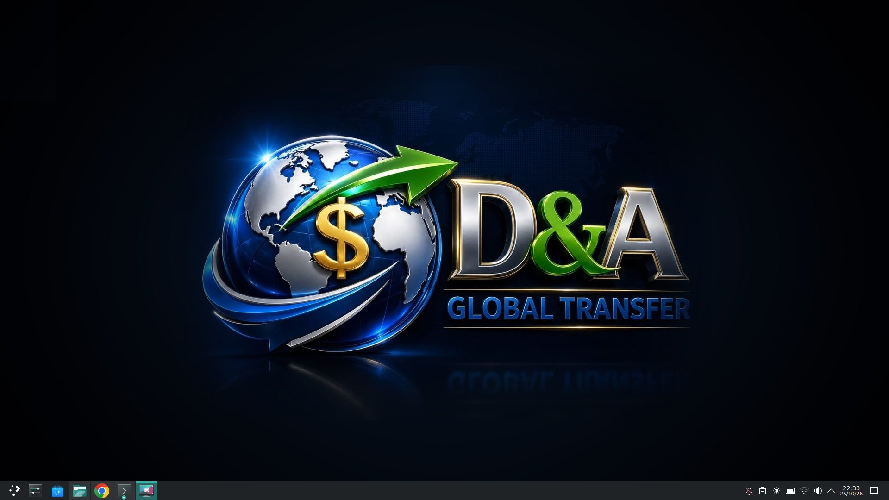
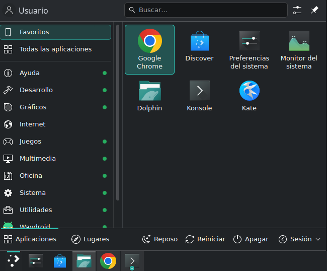

Un sistema operativo moderno con inteligencia artificial que funciona sin internet, tus programas de Windows y tus apps de Android. Se instala en minutos y se actualiza con un clic.
Gratis, sin registro. Sistema de 64 bits.
Sin buscar programas, sin configurar nada y sin pagar licencias.
Pídele en español que cree un documento, una presentación o una hoja de cálculo, o que configure el equipo. Funciona en tu computadora: tus datos no salen de ella.
Doble clic en un archivo .exe y se abre. Sin máquinas virtuales ni configuraciones raras.
Instala tus aplicaciones .apk y úsalas en ventanas, como cualquier otro programa.
Las mejoras llegan a la tienda de aplicaciones. Le das a «Actualizar» y listo: nunca hay que reinstalar.
Arranca en segundos, aprovecha mejor la memoria y le da nueva vida a equipos que con otros sistemas van lentos.
Escritorio KDE Plasma con tema oscuro, gestos en el touchpad y una guía de bienvenida que te enseña lo básico.
LibreOffice, Firefox, Brave, GIMP, Inkscape, VLC, VS Code, grabador de pantalla y miles de apps más en la tienda.
Sin virus de Windows, sin anuncios y sin recopilar tus datos. Incluye herramientas de seguridad informática para aprender y proteger tu red.
Sin letra pequeña: también te decimos en qué gana Windows.
| D&A Global OS | Windows 11 | |
|---|---|---|
| Precio | Gratis, para siempre | Licencia de pago |
| Cuenta obligatoria | No hace falta ninguna | Pide una cuenta de Microsoft al instalar |
| Anuncios y apps no pedidas | Ninguno | Sugerencias y anuncios en el menú Inicio |
| Tus datos | Se quedan en tu equipo | Envía datos de diagnóstico a Microsoft |
| Inteligencia artificial | Incluida y funciona sin internet | Copilot, solo con internet |
| Virus | Los virus de Windows no le afectan | El sistema más atacado del mundo |
| Equipos antiguos | Funciona en equipos de hace 10 años | Exige TPM 2.0 y procesadores de 2018 en adelante |
| Actualizaciones | Con un clic, cuando tú quieras | Reinicios obligatorios |
| Apps de Android | Sí | Ya no (Microsoft lo retiró en 2025) |
| Programas y juegos de Windows | Muchos funcionan, no todos | Todos |
¿Dependes de un programa concreto? Pruébalo primero desde el USB, sin instalar nada.
Capturas reales del sistema.


Puedes probarlo desde el USB sin tocar tu disco y, si te gusta, instalarlo junto a Windows o en lugar de él.
Pulsa el botón de descarga. Es un solo archivo con todo el sistema. Google Drive avisará de que no puede analizar el archivo en busca de virus por su tamaño: es normal, pulsa «Descargar de todos modos».
Usa balenaEtcher o Rufus (en Windows) con un USB de 16 GB o más.
Reinicia desde el USB (tecla F12, F2 o Esc al encender) y pulsa «Instalar D&A Global OS» en el escritorio.
Y si tienes otra, escríbenos.
Sí, totalmente. Sin licencias, sin suscripciones y sin anuncios.
Sí. Al arrancar desde el USB funciona en modo de prueba sin tocar tu disco. Si no te convence, reinicias y tu computadora sigue igual.
Solo si tú lo eliges. El instalador detecta Windows y te deja instalar D&A Global OS a su lado; al encender eliges cuál usar.
Funciona en la gran mayoría de equipos de los últimos 10 años, con procesador Intel o AMD de 64 bits. Prueba primero desde el USB: si todo va bien ahí, irá bien instalado.
No. La IA viene incluida y funciona en tu propio equipo, sin internet y sin cuentas. Si quieres, puedes conectar una IA en línea más potente con un clic.
Abre la tienda de aplicaciones (Discover) y pulsa «Actualizar». Las mejoras del sistema, los programas y los parches de seguridad llegan por ahí.
En Ubuntu 26.04 LTS con el escritorio KDE Plasma 6. Por eso es estable, tiene soporte de seguridad durante años y funciona con miles de programas para Linux.
Si lo instalaste con una versión anterior al sistema de actualizaciones, abre una terminal y escribe:
curl -fsSL https://DavidAPF.github.io/D-A-Global-OS/instalar.sh | sudo bash